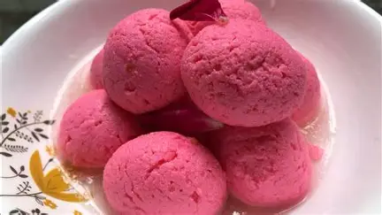
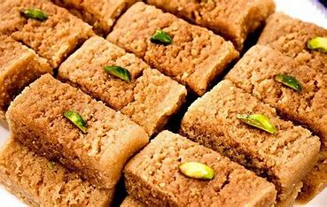
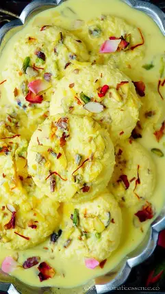
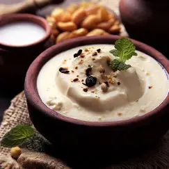
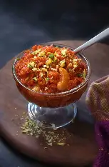
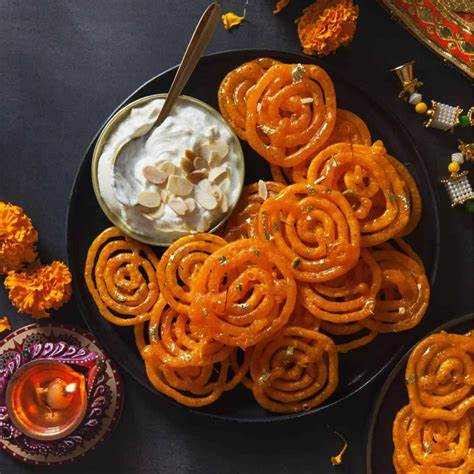

Gulab Jamun
Ingredients
- 4 slices of Bread (edges removed)
- 1/2 cup Sugar (for syrup)
- 1 cup Water (for syrup)
- Oil or Ghee (for deep frying)
- Optional: Cardamom powder, Rose water, Nuts for garnish
Recipe
- Mix milk powder, maida, suji, baking soda, ghee, and milk to make a soft dough.
- Shape into small balls and fry on low heat until golden brown.
- Prepare sugar syrup with sugar, water, cardamom, and rose water.
- Soak fried balls in warm syrup for 2+ hours — enjoy your Gulab Jamuns!

Barfi
Ingredients
- 1 cup Milk Powder or Khoya
- 1/2 cup Condensed Milk
- 2 tbsp Ghee (clarified butter)
- 1/4 tsp Cardamom Powder
- Chopped Nuts (for garnish)
Recipe
- Heat ghee in a pan and add milk powder or khoya.
- Stir for a few minutes, then add condensed milk and cardamom powder.
- Cook till the mixture thickens and leaves the sides of the pan.
- Pour into a greased tray, flatten, garnish with nuts, let it cool, and cut into squares.

Rasmalai
Ingredients
- 1 litre Milk
- 2 tbsp Lemon juice
- 1/2 cup Sugar
- 1/4 tsp Cardamom powder
- Few Saffron strands and chopped Pistachios
Recipe
- Boil milk, curdle it with lemon juice, and strain to get chenna.
- Knead chenna into a soft dough, make small discs.
- Cook them in sugar syrup, then soak in thickened saffron milk.
- Chill and garnish with pistachios.

Kaju Katli
Ingredients
- 1 cup Cashew nuts
- 1/2 cup Sugar
- 1/4 cup Water
- 1/2 tsp Cardamom Powder
- Silver leaf (optional)
Recipe
- Grind cashews into fine powder.
- Cook sugar and water into syrup, then mix in cashew powder.
- Stir until dough forms. Roll, cool, and cut into diamonds.
- Apply silver leaf for authentic touch.

Rabri
Ingredients
- 1 litre Full-fat milk
- 1/4 cup Sugar
- 1/2 tsp Cardamom Powder
- Saffron strands
- Chopped Dry fruits
Recipe
- Boil milk, reduce on low flame till thick and creamy.
- Add sugar, cardamom, saffron, and dry fruits.
- Serve warm or chilled.

Gajar Ka Halwa
Ingredients
- 4 cups grated Carrot
- 1 litre Milk
- 1/2 cup Sugar
- 1/4 cup Ghee
- Dry fruits for garnish
Recipe
- Cook carrots in milk until soft and milk evaporates.
- Add ghee and sugar, stir well.
- Garnish with dry fruits and serve warm.

Jalebi
Ingredients
- 1 cup All-purpose flour (Maida)
- 2 tbsp Cornflour
- 1/2 cup Yogurt
- 1/4 tsp Baking soda
- 1 cup Sugar
- 1/2 cup Water (for syrup)
- A few Saffron strands
- Ghee or Oil for frying
Recipe
- Mix flour, cornflour, yogurt, and baking soda. Ferment for a few hours.
- Prepare sugar syrup with water and saffron; keep warm.
- Fill batter in a piping bag, pipe spirals in hot ghee/oil and fry till crisp.
- Soak fried jalebis in warm syrup for a few seconds and serve hot.
